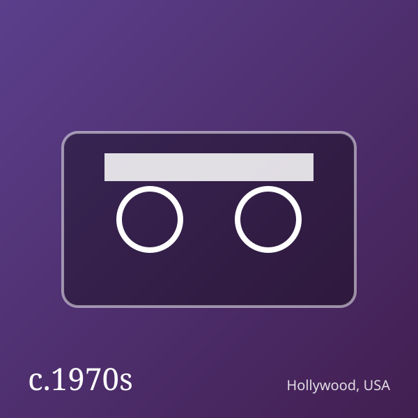

Mary Bolton's song

For most of the twentieth century, magazines carried small ads: send us your poem and we'll make it a record. Thousands of ordinary people paid. Session musicians set the lyrics in an afternoon, a few copies were pressed, and the record usually went nowhere except the customer's front room.
MSR 851 is one of these: "My Husband, Lover, Friend", sung by "Bobbi Blake" to words by Mary Bolton. It is a stranger's own words, paid into existence and then ignored. The American Song-Poem Music Archives keeps these discs listenable.